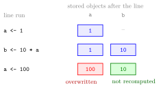

Object and Assignment¶
Definition¶
An object is a value stored in the computer's memory under a name, so that it can be used again later. An assignment
evaluates the expression on the right of the assignment operator <- (a less-than sign followed by a minus sign, forming an arrow) and stores the result under the name on the left. name = value does the same, but <- is the usual choice in R.
An assignment prints nothing. To see the stored value, type the name of the object or use print(name). Assigning to a name that already exists replaces the old value without any warning.
Names follow a few rules: a name cannot start with a digit, cannot contain symbols such as ^, !, $, @, +, -, / or *, and cannot be a reserved word such as if or function. Names are case-sensitive, so x and X are different objects. A safe habit is to start with a letter and use only letters, digits, underscores and dots, with descriptive names such as result.
Interpretation¶
An object name is a label attached to a value. The right-hand side of an assignment is evaluated once, at the moment the line runs, and only its result is stored. b <- 10 * a therefore stores a number, not the rule "ten times a".

The figure follows Example 2 line by line. After a <- 1 the environment holds a with value 1. b <- 10 * a looks up a, computes 10 and stores it as b. a <- 100 replaces the value of a (red), but b still holds 10 (green): R overwrites only the object on the left of the arrow and does not recompute objects that were calculated from it earlier.
The arrow is an instruction, not an equation. In mathematics has no solution, but x <- x + 1 is meaningful: take the current value of x, add one and store the result as the new x. The same idea of storing and reusing values appears in every later page, from vectors to writing your own functions, where objects created inside a function live in their own environment.
Two mistakes are common. The first is expecting a spreadsheet: unlike a cell formula, b is not updated when a changes. The second is spacing: x<-1 is an assignment, while x < -1 is a comparison of x with minus one.
Key Results¶
name <- expressionevaluates the expression first and then stores the result; nothing is printed.- Typing the name, or
print(name), shows the stored value. Stored objects are listed in the environment pane of RStudio. - Assigning to an existing name overwrites it silently, without asking for permission.
- Objects computed earlier from an object keep their values when that object is overwritten.
- Names are case-sensitive, cannot start with a digit and cannot be reserved words such as
if,function,TRUEorNA.
Examples¶
1. Store a result and reuse it.
The first line prints nothing; the value 4 is stored and can be used in later calculations without repeating 2 + 2.
2. Overwriting does not update earlier results.
In the same way, after x <- 10 and x3 <- x^3, the object x3 holds 1000; changing x to 4 afterwards leaves x3 at 1000 until the line x3 <- x^3 is run again.
3. Updating an object with its own value.
The right-hand side count + 1 is computed from the old value 5, and the result 6 replaces it. The last two commands show that = also assigns.
4. Pitfalls: case, invalid names and a missing space.
x <- 10
X
#> Error: object 'X' not found
2x <- 5
#> Error: unexpected symbol in "2x"
x < -1
#> [1] FALSE
x
#> [1] 10
X was never created, because names are case-sensitive. A name starting with a digit is rejected before anything runs. x < -1 compares 10 with minus one and returns FALSE; it does not change x.
Prerequisites¶
Related Concepts¶
Sources¶
- Programming for EOR · Week 1
- Lecture script Intro to R and RStudio (Part 1), section "Objects", and the Week 1 exercise solutions (Part 1, exercises 2 to 4)
Aliases: object, assignment operator, <-, variable in R, object name, overwriting an object Keywords: assignment arrow, naming rules, overwriting, environment pane
Last updated: 10 November 2026 16:43
Object and AssignmentAtomic Data Typesfor LoopFunction Arguments and DefaultsFunction CallFunction EnvironmentWriting FunctionsR and RStudioAtomic VectorComparison Operators